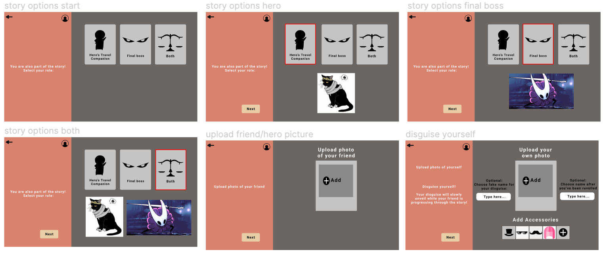
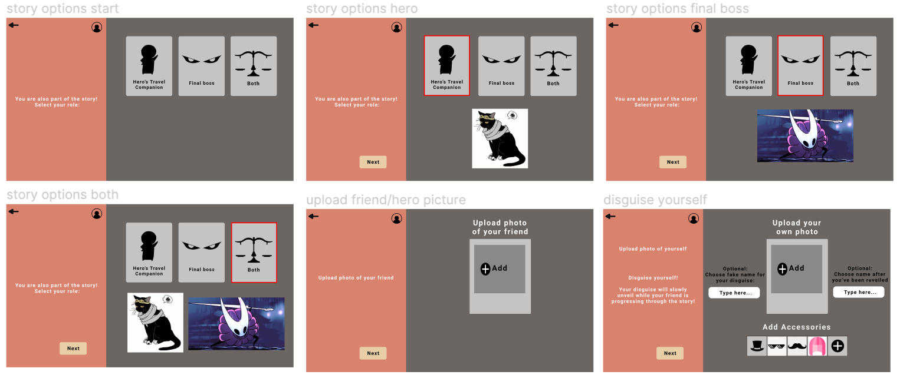
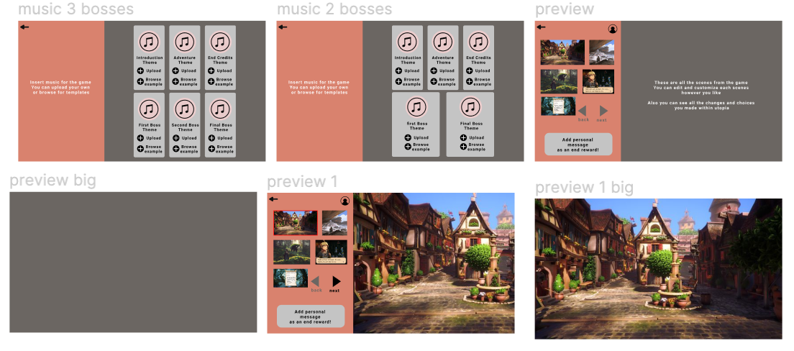
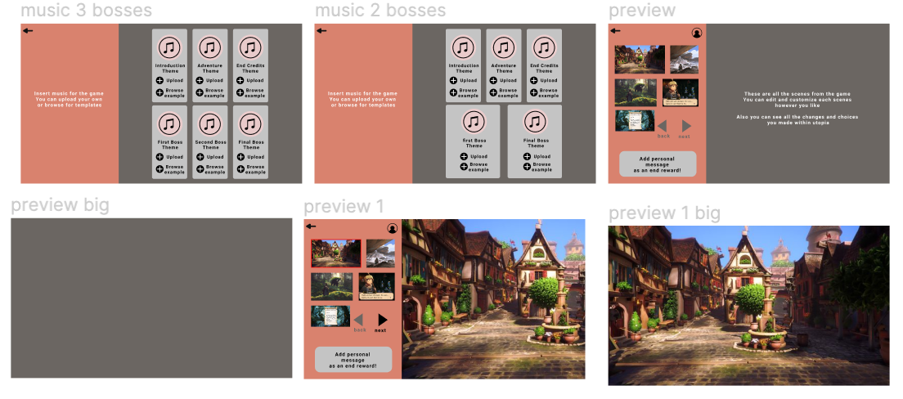
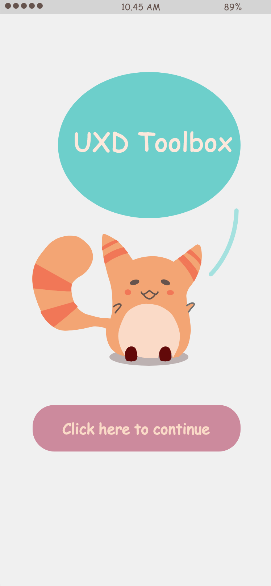

I wanted to visualize Den Haag and rain was something that came to my mind. Hence, I decided to make a monochrome rain generator.
There was something about rain that is soothing, calming,and dull at the same time. Thus, I decided to go with monochrome as the color
scheme.
When the keypad "a" is pressed, the rain turns to white and the background turns to black. On the other hand, if the keypad "d" was pressed,
the rain turns back to black and the background turns to white. The sound of a thunderstorm appears when one of the keys are pressed.
This is an overview of my final assignment, during my programming bootcamp along with my fifth attempt in working with processing.


In this project, me and my partner were given a chance to create a gift-giving experience for Hallmark. The both of us were required to make a card personalisation tool and the digital unwrapping. The main idea behind this gift-giving experience is to create an experience for people who lives far away from their friends and families and still wishes to give a gift.
Our persona was a university student from Aruba named Alfonso Biob. Currently, he’s attending an IT major and he misses the memories that he had back home from his families and friends. He loves going out taking a stroll, but at the same time he’s also lazy because he’s a couch potato. He also enjoys watching fantasy movies, especially Disney themed ones.
Since, our persona was a huge geek we decided to make an adventure game. The whole point of our concept is to be able to experience going on an adventure without having to go out and walk around. The game will have a plot where the receiver is the main character and the giver is the supporting character. The idea behind it not only brings the experience of being in an adventure, but also sharing this experience with your families, friends, relatives, and other people that you would like to connect by including them in the game such as through the boss, companion in the game or both.
The game also provided disguises that the giver can use, in order to keep the sender’s identity in the game a secret. As the receiver proceeds further into the game, the hidden identity of the sender will be revealed. The game is designed to be used in any events, either a celebratory event or just sending a message to your loved ones.
 

 


In this project, I was required to design an app that gives an overview of the diverging and converging techniques. The app act as an informational toolbox. I choose bright colours to make the toolbox app appeal fresh to the eye. I also add tiny animation one of which was the swipe animation within the toolbox.
In this project, I was required to make a visualization of my last university trip. The destination is to Linz, Austria to visit the annual Ars Electronica Festival.